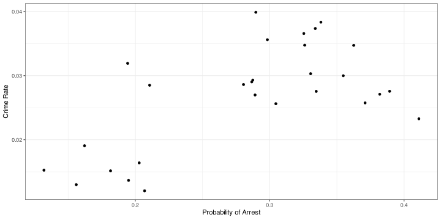
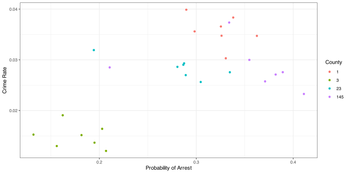
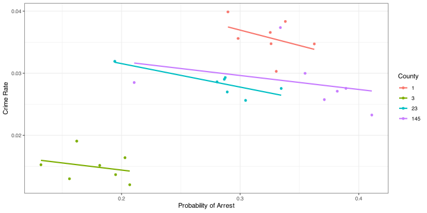
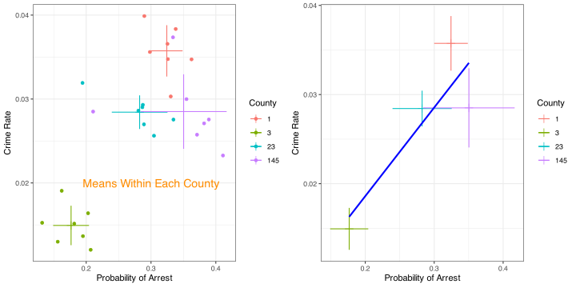

county year crmrte prbarr
1 1 81 0.0398849 0.289696
2 1 82 0.0383449 0.338111
3 1 83 0.0303048 0.330449
4 1 84 0.0347259 0.362525
5 1 85 0.0365730 0.325395
6 1 86 0.0347524 0.326062Panel Data and Fixed Effects
Moshi Alam
Motivation
- So far we have dealt with a single cross-sectional dataset
- The biggest challenge to causal inference is selection bias because we do not observe the counterfactual
- We have learned how IVs can help us solve the endogeneity problem
- But IVs are not always easy to find — especially good ones
- Often, data over multiple time periods can reveal interesting patterns and provide additional variation to consistently estimate parameters of interest
- … especially if the unobservables that make our estimates inconsistent do not change over time
Motivation (continued)
Panel data are additionally important because:
- They are required to understand policy impacts
- They allow us to study how causal impacts evolve over time
- Many policies are staggered in implementation, necessitating panel data
- Will discuss this more details in a couple of classes when we get into Difference-in-Differences
- Even when the question of interest is not a policy evaluation, observing the same units over time can be very informative
Types of Data Over Time
- Panel data
- Balanced panel: every unit observed in all time periods
- Unbalanced panel: some units missing in certain time periods (attrition)
- PSID – Panel Study of Income Dynamics
- NLSY – National Longitudinal Survey of Youth
- Most administrative datasets (e.g., tax records) are panel
- PSID – Panel Study of Income Dynamics
- Balanced panel: every unit observed in all time periods
- Repeated cross-sections
- Different units observed in each time period
- CPS – Current Population Survey
- NHIS – National Health Interview Survey
- Different units observed in each time period
- Time series
Panel Data & Fixed Effects
- Credits: Bunch of materials drawn from Florian Oswald; Nick C. Huntington-Klein
Cross-section vs Panel
- Cross-section: one time snapshot per unit \(i\): \(\hat{\beta_{OLS}} = \frac{\sum_i (x_i - \bar x)(y_i - \bar y)}{\sum_i (x_i - \bar x)^2}\)
- Panel: multiple time periods \(t\) per unit \(\color{blue}{i}\): \(\hat{\beta_{FE}} = \frac{\sum_{\color{blue}{i}} \sum_{\color{red}{t}} \left(x_{\color{blue}{i}\color{red}{t}} - \bar x_{\color{blue}{i}}\right)\left(y_{\color{blue}{i}\color{red}{t}} - \bar y_{\color{blue}{i}}\right)}{\sum_{\color{blue}{i}} \sum_{\color{red}{t}} \left(x_{\color{blue}{i}\color{red}{t}} - \bar x_{\color{blue}{i}}\right)^2}\)
- Panel: index \((i,t)\); track units over time
- Benefit: control unobserved time-invariant heterogeneity \(c_i\)
- Deterrence question: does higher arrest probability reduce crime?
Raw pattern
Pooled OLS
Estimate Std. Error t value Pr(>|t|)
0.0648010359 0.0159005783 4.0753886238 0.0003839695 Naive Interpreting the Cross-Section
- Literally: counties with a higher probability of arrest also have a higher crime rate.
- Does this imply that more crime leads to more efficient policing?
- Or that higher police presence deters crime — but only once it gets bad enough?
- What determines police efficiency?
- Could depend on poverty, local laws, political commitment, or other local factors.
- Could depend on poverty, local laws, political commitment, or other local factors.
- 🤯 There are clearly many omitted factors in this simple model — we cannot tell whether the estimated relationship makes sense causally.
What Varies Between and Within Counties
LocalStuff — fixed county characteristics (e.g., geography, institutions).
LawAndOrder and CivilRights — political and institutional traits that may change slowly, but are mostly fixed over short horizons.
Police budgets and Poverty levels — vary within counties over time, reflecting local and macroeconomic fluctuations (national)
Can panel data allows us to separate time-invariant county traits from time-varying factors — helping us get closer to a causal interpretation?
Within county patterns
Within county patterns
Within county means
Panel Model with Unit FE
\[
y_{it} = \beta x_{it} + \underbrace{c_i + u_{it}}_{\text{error}}
\] - \(c_i\) may correlate with \(x_{it}\) → OLS biased \(E(c_i + u_{it} \mid x_{it}) \neq 0\) - Simple OLS mixes within + between; biased if \(Cov(x_{it}, c_i) \neq 0\). - Between: differences across \(i\) (time-invariant) → drives pooled OLS bias
- Within: changes over \(t\) within \(i\) → identifies \(\beta\) under FE assumptions
css <- crime4 %>% filter(county %in% c(1,3,23,145))
m_cs <- lm(crmrte ~ prbarr, data = css)
coef(m_cs)["prbarr"] prbarr
0.06480104 - FE approach: control for \(c_i\) by allowing unit-specific intercepts or FIXED EFFECTS
FE Assumptions (succinct)
\[ y_{it} = \beta x_{it} + \underbrace{c_i + u_{it}}_{\text{error}} \]
- Strict exogeneity: \(E[u_{it} \mid x_{i1},…,x_{iT},c_i] = 0\)
- No perfect collinearity: time-invariant regressors drop in FE
- Errors: correlation within \(i\) → cluster by \(i\)
Three Estimators (same \(\hat\beta\))
- LSDV (dummies): \[ y_{it} = \beta x_{it} + \sum_{i=1}^{N-1} \gamma_i 1\{i\} + u_{it} \]
- First-difference (FD), \(T=2\): \[ \Delta y_i = \beta \Delta x_i + \Delta u_i \]
- Within (demeaning), \(T\ge2\): \[ y_{it} - \bar y_i = \beta (x_{it} - \bar x_i) + (u_{it} - \bar u_i) \]
LSDV (Dummy-Variable OLS)
Call:
lm(formula = crmrte ~ prbarr + factor(county), data = css)
Residuals:
Min 1Q Median 3Q Max
-0.0052637 -0.0014554 0.0000986 0.0009928 0.0083848
Coefficients:
Estimate Std. Error t value Pr(>|t|)
(Intercept) 0.044945 0.004556 9.866 9.85e-10 ***
prbarr -0.028376 0.013629 -2.082 0.04865 *
factor(county)3 -0.024996 0.002544 -9.824 1.07e-09 ***
factor(county)23 -0.008498 0.001658 -5.126 3.41e-05 ***
factor(county)145 -0.006500 0.001596 -4.072 0.00047 ***
---
Signif. codes: 0 '***' 0.001 '**' 0.01 '*' 0.05 '.' 0.1 ' ' 1
Residual standard error: 0.002912 on 23 degrees of freedom
Multiple R-squared: 0.8926, Adjusted R-squared: 0.8739
F-statistic: 47.78 on 4 and 23 DF, p-value: 8.115e-11- Adds intercept for every county → recovers within county slope.
library(modelsummary)
cdata <- css %>%
group_by(county) %>%
mutate(mean_crime = mean(crmrte),
mean_prob = mean(prbarr)) %>%
mutate(demeaned_crime = crmrte - mean_crime,
demeaned_prob = prbarr - mean_prob)
mod = list()
mod$dummy <- lm(crmrte ~ prbarr + factor(county), css) # i is the unit ID
mod$xsect <- lm(crmrte ~ prbarr, data = cdata)
mod$demeaned <- lm(demeaned_crime ~ demeaned_prob, data = cdata)
gom = 'DF|Deviance|AIC|BIC|p.value|se_type|R2 Adj. |statistic|Log.Lik.|Num.Obs.' # stuff to omit from table
modelsummary::modelsummary(mod[c("xsect","dummy","demeaned")],
statistic = 'std.error',
title = "Comparing (biased) cross-setcional OLS, dummy variable and manual demeaning panel regressions",
coef_omit = "factor",
gof_omit = gom)| xsect | dummy | demeaned | |
|---|---|---|---|
| (Intercept) | 0.009 | 0.045 | 0.000 |
| (0.005) | (0.005) | (0.001) | |
| prbarr | 0.065 | -0.028 | |
| (0.016) | (0.014) | ||
| demeaned_prob | -0.028 | ||
| (0.013) | |||
| R2 | 0.390 | 0.893 | 0.159 |
| R2 Adj. | 0.366 | 0.874 | 0.126 |
| F | 16.609 | 47.777 | 4.900 |
| RMSE | 0.01 | 0.00 | 0.00 |
Manual Within Transformation
cdata <- css %>%
mutate(y = crmrte, x = prbarr) %>%
group_by(county) %>%
mutate(y_dm = y - mean(y), x_dm = x - mean(x)) %>%
ungroup()
m_within_manual <- lm(y_dm ~ x_dm, data = cdata)
summary(m_within_manual)
Call:
lm(formula = y_dm ~ x_dm, data = cdata)
Residuals:
Min 1Q Median 3Q Max
-0.0052637 -0.0014554 0.0000986 0.0009928 0.0083848
Coefficients:
Estimate Std. Error t value Pr(>|t|)
(Intercept) 1.190e-18 5.175e-04 0.000 1.0000
x_dm -2.838e-02 1.282e-02 -2.214 0.0358 *
---
Signif. codes: 0 '***' 0.001 '**' 0.01 '*' 0.05 '.' 0.1 ' ' 1
Residual standard error: 0.002739 on 26 degrees of freedom
Multiple R-squared: 0.1586, Adjusted R-squared: 0.1262
F-statistic: 4.9 on 1 and 26 DF, p-value: 0.03583- Same slope as LSDV
- Intercept is 0 by construction.
First-Differencing
dt <- as.data.table(css)[order(county, year)]
dt[, y := crmrte]; dt[, x := prbarr]
dt[, `:=`(dy = y - shift(y), dx = x - shift(x)), by = county]
m_fd <- lm(dy ~ dx, data = dt[!is.na(dy)])
summary(m_fd)
Call:
lm(formula = dy ~ dx, data = dt[!is.na(dy)])
Residuals:
Min 1Q Median 3Q Max
-0.0089587 -0.0015629 -0.0002049 0.0019199 0.0103419
Coefficients:
Estimate Std. Error t value Pr(>|t|)
(Intercept) -0.0002985 0.0008554 -0.349 0.730
dx -0.0096765 0.0196879 -0.491 0.628
Residual standard error: 0.00413 on 22 degrees of freedom
Multiple R-squared: 0.01086, Adjusted R-squared: -0.0341
F-statistic: 0.2416 on 1 and 22 DF, p-value: 0.6279- With \(T=2\), FD \(\equiv\) FE.
- For \(T>2\), FE typically more efficient if errors are not well-behaved in differences.
- Let’s use a package which can worry for us about efficiency and clustering
fixest.
fixest::feols (recommended)
m_fe_1w <- feols(crmrte ~ prbarr | county, data = css, cluster = ~ county)
modelsummary::modelsummary(
list("Pooled (lm)" = m_cs,
"LSDV (lm)" = m_lsdv,
"Within (manual lm)" = m_within_manual,
"FE (fixest)" = m_fe_1w)
)| Pooled (lm) | LSDV (lm) | Within (manual lm) | FE (fixest) | |
|---|---|---|---|---|
| (Intercept) | 0.009 | 0.045 | 0.000 | |
| (0.005) | (0.005) | (0.001) | ||
| prbarr | 0.065 | -0.028 | -0.028 | |
| (0.016) | (0.014) | (0.005) | ||
| factor(county)3 | -0.025 | |||
| (0.003) | ||||
| factor(county)23 | -0.008 | |||
| (0.002) | ||||
| factor(county)145 | -0.007 | |||
| (0.002) | ||||
| x_dm | -0.028 | |||
| (0.013) | ||||
| Num.Obs. | 28 | 28 | 28 | 28 |
| R2 | 0.390 | 0.893 | 0.159 | 0.893 |
| R2 Adj. | 0.366 | 0.874 | 0.126 | 0.874 |
| R2 Within | 0.159 | |||
| R2 Within Adj. | 0.122 | |||
| AIC | -198.4 | -241.0 | -247.0 | -243.0 |
| BIC | -194.4 | -233.0 | -243.0 | -236.4 |
| Log.Lik. | 102.197 | 126.516 | 126.516 | |
| F | 16.609 | 47.777 | 4.900 | |
| RMSE | 0.01 | 0.00 | 0.00 | 0.00 |
| Std.Errors | by: county | |||
| FE: county | X |
- Syntax:
y ~ x | FE1 + FE2 + ... - Cluster by the unit for valid SEs with serial correlation.
Interpretation (within effect)
- \(\hat\beta_{\text{FE}}\): effect of a within-county change in \(prbarr\) on \(crmrte\), holding time-invariant county traits fixed.
- A change \(\Delta prbarr = 0.10\) implies \(\Delta crmrte \approx 0.10 \times \hat\beta_{\text{FE}}\) (within a county over time).
So we started from here with POLS
Pooled OLS: Mixing Within and Between Variation

FE: Within Transformation
multiple time periods \(t\) per unit \(\color{blue}{i}\): \(\hat{\beta_{FE}} = \frac{\sum_{\color{blue}{i}} \sum_{\color{red}{t}} \left(x_{\color{blue}{i}\color{red}{t}} - \bar x_{\color{blue}{i}}\right)\left(y_{\color{blue}{i}\color{red}{t}} - \bar y_{\color{blue}{i}}\right)}{\sum_{\color{blue}{i}} \sum_{\color{red}{t}} \left(x_{\color{blue}{i}\color{red}{t}} - \bar x_{\color{blue}{i}}\right)^2}\)

The within transformation centers the data!
By time-demeaning \(y\) and \(x\), we project out the fixed factors related to county
Only within county variation is left.
Made by Nick C Huntington-Klein. 🙏
Time-Invariant Regressors
- Variables constant within \(i\) (e.g., geography) are absorbed and not identified in FE.
- Absorbed by \(c_i\).
- For example if you have tax panel data of individuals over time and you add an individual fixed effect, what are examples of variables that you cannot estimate the effect of?
- Options (if you need to udnerstand the efffect of some variable):
- interact with time
Two-Way Fixed Effects
Motivation
- Often, we want to control for common shocks that affect all units in a given time period
- e.g., national business cycles, federal policy changes, macroeconomic shocks
- We can add time fixed effects \(\tau_t\) to control for these common shocks
- This leads to the Two-Way Fixed Effects (TWFE) model
- \[ y_{it} = \beta x_{it} + c_i + \tau_t + u_{it} \]
- Unit fixed effects \(c_i\) control for time-invariant heterogeneity across units \(i\)
- Time fixed effects \(\tau_t\) control for common shocks to all units across time periods \(t\)
Two-Way Fixed Effects (TWFE)
- Add common shocks \(\tau_t\): \[ y_{it} = \beta x_{it} + c_i + \tau_t + u_{it} \]
m_twoway <- feols(crmrte ~ prbarr | county + year, data = crime4, cluster = ~ county)
etable(m_fe_1w, m_twoway, se = "cluster") m_fe_1w m_twoway
Dependent Var.: crmrte crmrte
prbarr -0.0284* (0.0052) -0.0011 (0.0026)
Fixed-Effects: ----------------- ----------------
county Yes Yes
year No Yes
_______________ _________________ ________________
S.E.: Clustered by: county by: county
Observations 28 630
R2 0.89258 0.87735
Within R2 0.15859 0.00034
---
Signif. codes: 0 '***' 0.001 '**' 0.01 '*' 0.05 '.' 0.1 ' ' 1- Interprets \(\beta\) net of unit and time effects.
- IN the next two weeks, we will see how this is a foundational model for policy evaluation
Comparing POLS, FE, TWFE
m_pooled <- lm(crmrte ~ prbarr, data = crime4)
m_fe <- feols(crmrte ~ prbarr | county, data = crime4)
m_twfe <- feols(crmrte ~ prbarr | county + year, data = crime4, cluster = ~ county)
modelsummary::modelsummary(list(
"Pooled" = m_pooled,
"FE" = m_fe,
"TWFE (fixest)" = m_twfe
))| Pooled | FE | TWFE (fixest) | |
|---|---|---|---|
| (Intercept) | 0.043 | ||
| (0.001) | |||
| prbarr | -0.038 | -0.002 | -0.001 |
| (0.004) | (0.003) | (0.003) | |
| Num.Obs. | 630 | 630 | 630 |
| R2 | 0.129 | 0.871 | 0.877 |
| R2 Adj. | 0.127 | 0.849 | 0.855 |
| R2 Within | 0.001 | 0.000 | |
| R2 Within Adj. | -0.001 | -0.002 | |
| AIC | -3347.3 | -4373.6 | -4394.6 |
| BIC | -3334.0 | -3969.1 | -3963.4 |
| Log.Lik. | 1676.651 | ||
| F | 92.646 | ||
| RMSE | 0.02 | 0.01 | 0.01 |
| Std.Errors | by: county | by: county | |
| FE: county | X | X | |
| FE: year | X |
References & Credits
- Some slides/materials adapted from Florian Oswald, Nick C. Huntington-Klein (Nick Klein)